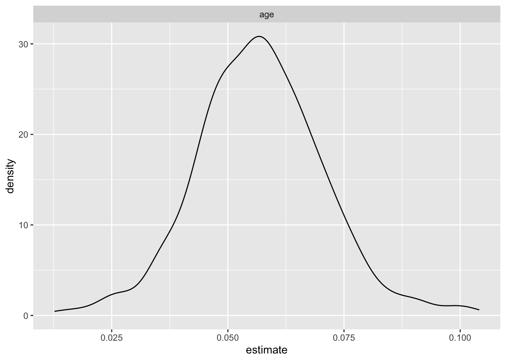

The National Health and Nutrition Examination Survey is designed to evaluate the health and nutritional status of both adults and children. In 1999, the NHANES study transitioned into a continuous format, enabling investigators to conduct longitudinal studies. NHANES encompasses both interview data and physical examination data, which involved information from different perspectives and fields, providing researchers with a comprehensive dataset to examine the prevalence and risk factors associated with various diseases. In this study, we used the demographic data, HIV testing, and sexual behavior data from 1999 to 2016 to identify the potential sociodemographic factors associated with HIV infection status.
Our study’s primary objective is to analyze the NHANES dataset from 1999 to 2016 to identify sociodemographic factors associated with HIV infection rates in the United States. By examining variables such as age, gender, race, education level, and marial status, we aim to illuminate the complex interplay of societal elements influencing HIV prevalence. This analysis will provide valuable insights into the demographics most affected by HIV, guiding public health strategies and resource allocation to improve prevention and treatment programs. Through this research, we seek to contribute to a more nuanced understanding of HIV epidemiology that could underpin targeted interventions and support the reduction of infection disparities across diverse population groups.
The analyzed data sets was downloaded from the National Health and Nutrition Examination Survey Website. Specifically, demographic, HIV test, and sexual behavior datas from 1999 to 2016 utilized to conducted the analysis. Participants aged between 20 and 49 with a completed survey were eligible and included to our study.
demo_list =
list.files(path = "NHANES/DEMO", full.names = TRUE)
hiv_list =
list.files(path = "NHANES/HIV", full.names = TRUE)
sxq_list =
list.files(path = "NHANES/SXQ", full.names = TRUE)
load_files = function(x){
filetype =
str_extract(x, "DEMO|HIV|SXQ")
year =
str_extract(x, "(?<=_)[A-Z]")
data =
read_xpt(x) |>
janitor::clean_names()|>
mutate(filetype = filetype, year = year)
}
demo_list_output =
map(demo_list, load_files)
hiv_list_output =
map(hiv_list, load_files)
sxq_list_output =
map(sxq_list, load_files)
join_pair = function(df1, df2) {
left_join(df1, df2, by = c("seqn", "year"))
}
hiv_demo_list =
map2(hiv_list_output, demo_list_output, ~join_pair(.x, .y))
hiv_demo_sxq_df =
map2(hiv_demo_list, sxq_list_output, ~join_pair(.x, .y)) |>
bind_rows()
cleaned_joined_df =
hiv_demo_sxq_df |>
filter(ridageyr >= 20 & ridageyr <= 49) |>
mutate(hiv = case_when(
lbdhi == 1 | lbxhivc == 1 ~ 1,
lbdhi == 2 | lbxhivc == 2 ~ 2)
)|>
mutate(MSM = case_when(
year %in% c("A","B","C") ~ sxq220,
year %in% c("D","E","F","G","H","I") ~ sxq550)
)|>
mutate(WSW = case_when(
year %in% c("A","B","C") ~ sxq150,
year %in% c("D","E","F","G","H","I") ~ sxq490)
)|>
mutate(year = recode(year,
"A" = "1999-2000",
"B" = "2001-2002",
"C" = "2003-2004",
"D" = "2005-2006",
"E" = "2007-2008",
"F" = "2009-2010",
"G" = "2011-2012",
"H" = "2013-2014",
"I" = "2015-2016"),
hiv = recode(hiv,
"1" = "Reactive",
"2" = "Non-reactive"),
gender = recode(riagendr,
"1" = "Male",
"2" = "Female"),
age = ridageyr,
race = recode(ridreth1,
"1" = "Mexican American",
"2" = "Other Hispanic",
"3" = "Non-Hispanic White",
"4" = "Non-Hispanic Black",
"5" = "Other Race - Including Multi-Racial"),
education = recode(dmdeduc2,
"1" = "Less than 9th grade",
"2" = "9-11th grade",
"3" = "High school graduate or equivalent",
"4" = "Some college or AA degree",
"5" = "College graduate or above",
"7" = NA_character_,
"9" = NA_character_),
marriage = recode(dmdmartl,
"1" = "Married",
"2" = "Widowed",
"3" = "Divorced",
"4" = "Separated",
"5" = "Never married",
"6" = "Living with partner",
"77" = NA_character_,
"99" = NA_character_)
) |>
mutate(samesexcontact = case_when(
(MSM %in% c(0, 7777, 77777,9999, 99999) | WSW %in% c(0, 7777, 77777, 9999, 99999)) ~ 0,
(MSM >= 1 & MSM <= 600) | (WSW >= 1 & WSW <= 600) ~ 1
)) |>
select(seqn, hiv, age, gender, race, education, marriage, year, samesexcontact)To visualize the association between the selected potential risk factors and HIV test results, we specifically calculated the percent of participants whose HIV-antibody test showing (lbdhi or lbxhivc) ‘positive’ among all the participants who reported to have a ‘positive’ or ‘negative’ value in the antibody test. We further excluded the participants whose status is ‘missing’ or ‘indeterminate’ in the antibody test in our data visualization section.
Then, we plot each bar chart illustrating the integrated (from 1999 to 2016) percentage of ‘positive’ participants on the y-axis and the risk factor of interest on the x-axis, correlated with a line plot indicating the change of the ‘positive’ participants for each risk factor to assess the association between HIV and each risk factor in a rough way. Besides, the mean age of the positive clusters among each sub-cohort was also calculated for each characteristic/risk factor.
We firstly wrote a function for creating the combined plot for each risk factor.
combine_plot = function(bar, line, indicator){
title_g = paste("Percent of HIV-Antibody Positive Patients from 1999 to 2016 by", indicator)
combine_bar =
subplot(bar, line, margin = 0.1) %>%
layout(title = title_g)
annotations = list(
list(
x = 0.17,
y = 0.98,
text = "Total Percent",
xref = "paper",
yref = "paper",
xanchor = "center",
yanchor = "bottom",
showarrow = FALSE
),
list(
x = 0.86,
y = 0.98,
text = "Percent by Year",
xref = "paper",
yref = "paper",
xanchor = "center",
yanchor = "bottom",
showarrow = FALSE
))
combine_bar = combine_bar %>%
layout(annotations = annotations)
}bar_race =
cleaned_joined_df %>%
drop_na(hiv) %>%
group_by(race) %>%
summarize(total_par = n(),
age_mean = round(mean(age[hiv == "Reactive"]), 2),
hiv_percent = round(sum(hiv == "Reactive") / total_par * 100, 3)) %>%
ungroup() %>%
mutate(race = fct_reorder(race, hiv_percent)) %>%
mutate(text_label = str_c("mean age: ", age_mean, ", Positive HIV Percent: ", hiv_percent, "%")) %>%
plot_ly(x = ~race, y = ~hiv_percent, color = ~race, type = "bar", text = ~text_label)
line_race =
cleaned_joined_df %>%
drop_na(hiv) %>%
group_by(year, race) %>%
summarize(total_par = n(),
age_mean = round(mean(age[hiv == "Reactive"]), 2),
hiv_percent = round(sum(hiv == "Reactive") / total_par * 100, 3)) %>%
ungroup() %>%
mutate(race = fct_reorder(race, hiv_percent)) %>%
mutate(text_label = str_c("mean age: ", age_mean, ", Positive HIV Percent: ", hiv_percent, "%")) %>%
plot_ly(x = ~year, y = ~hiv_percent, color = ~race, type = "scatter", mode = "lines+markers",
text = ~text_label)
combine_race = combine_plot(bar_race, line_race, "Race")
combine_race The bar plot shown the percent of patients with a positive result from the HIV antibody test in each race when we integrated all datasets from 1999 to 2016. It indicated that the race Non-Hispanic Black has reported the highest percent, while the ‘Other Race’ had the lowest percent. From the bar plot, disparity among the races. The line plot shows the change in the reported, positive percent of HIV-antibody test from 1999 to 2016. We could observe that the trend in each race are different, but the Non-Hispanic Black and Other Hispanic had a decreasing trend over 1999 to 2016. From the two plots, we found that the mean age in each race and each year were also different.
bar_gender =
cleaned_joined_df %>%
drop_na(hiv) %>%
group_by(gender) %>%
summarize(total_par = n(),
age_mean = round(mean(age[hiv == "Reactive"]), 2),
hiv_percent = round(sum(hiv == "Reactive") / total_par * 100, 3)) %>%
ungroup() %>%
mutate(text_label = str_c("mean age: ", age_mean, ", Positive HIV Percent: ", hiv_percent, "%")) %>%
plot_ly(x = ~gender, y = ~hiv_percent, color = ~gender, type = "bar", text = ~text_label)
line_gender =
cleaned_joined_df %>%
drop_na(hiv) %>%
group_by(year, gender) %>%
summarize(total_par = n(),
age_mean = round(mean(age[hiv == "Reactive"]), 2),
hiv_percent = round(sum(hiv == "Reactive") / total_par * 100, 3)) %>%
ungroup() %>%
mutate(text_label = str_c("mean age: ", age_mean, ", Positive HIV Percent: ", hiv_percent, "%")) %>%
plot_ly(x = ~year, y = ~hiv_percent, color = ~gender, type = "scatter", mode = "lines+markers",
text = ~text_label)
combine_gender = combine_plot(bar_gender, line_gender, "Gender")
combine_genderThe bar plot and the line plot indicated that male has reported much higher percent than females. From the line plot, we observed that the positive percent were decreasing in each sex. From the two plots, we found that the mean age in females appeared to be slightly higher than males among the patients with a positive test result.
bar_edu =
cleaned_joined_df %>%
drop_na(hiv) %>%
group_by(education) %>%
summarize(total_par = n(),
age_mean = round(mean(age[hiv == "Reactive"]), 2),
hiv_percent = round(sum(hiv == "Reactive") / total_par * 100, 3)) %>%
ungroup() %>%
mutate(education = forcats::fct_relevel(education, c("Less than 9th grade", "9-11th grade",
"High school graduate or equivalent",
"Some college or AA degree",
"College graduate or above"))) %>%
mutate(text_label = str_c("mean age: ", age_mean, ", Positive HIV Percent: ", hiv_percent, "%")) %>%
plot_ly(x = ~education, y = ~hiv_percent, color = ~education, type = "bar", text = ~text_label)
line_edu =
cleaned_joined_df %>%
drop_na(hiv) %>%
group_by(year, education) %>%
summarize(total_par = n(),
age_mean = round(mean(age[hiv == "Reactive"]), 2),
hiv_percent = round(sum(hiv == "Reactive") / total_par * 100, 3)) %>%
ungroup() %>%
mutate(education = forcats::fct_relevel(education, c("Less than 9th grade", "9-11th grade",
"High school graduate or equivalent",
"Some college or AA degree",
"College graduate or above"))) %>%
mutate(text_label = str_c("mean age: ", age_mean, ", Positive HIV Percent: ", hiv_percent, "%")) %>%
plot_ly(x = ~year, y = ~hiv_percent, color = ~education, type = "scatter", mode = "lines+markers",
text = ~text_label)
combine_edu = combine_plot(bar_edu, line_edu, "Education")
combine_edu The bar plot indicated that the group with education level of ‘9-11th grade’ has reported the highest percent, while the ‘College graduate or above’ had the lowest percent; disparity among the education was also observed. From the line plot, we observed that the trend over 1999 to 2016 in each education level are different, but with a decreasing overall trend. From the two plots, we found that the mean age in each race and each year were also different, and it is hard to find a trend.
bar_mar =
cleaned_joined_df %>%
drop_na(hiv) %>%
group_by(marriage) %>%
summarize(total_par = n(),
age_mean = round(mean(age[hiv == "Reactive"]), 2),
hiv_percent = round(sum(hiv == "Reactive") / total_par * 100, 3)) %>%
ungroup() %>%
mutate(marriage = fct_reorder(marriage, hiv_percent)) %>%
mutate(text_label = str_c("mean age: ", age_mean, ", Positive HIV Percent: ", hiv_percent, "%")) %>%
plot_ly(x = ~marriage, y = ~hiv_percent, color = ~marriage, type = "bar", text = ~text_label)
line_mar =
cleaned_joined_df %>%
drop_na(hiv, marriage) %>%
group_by(year, marriage) %>%
summarize(total_par = n(),
age_mean = round(mean(age[hiv == "Reactive"]), 2),
hiv_percent = round(sum(hiv == "Reactive") / total_par * 100, 3)) %>%
ungroup() %>%
mutate(marriage = fct_reorder(marriage, hiv_percent)) %>%
mutate(text_label = str_c("mean age: ", age_mean, ", Positive HIV Percent: ", hiv_percent, "%")) %>%
plot_ly(x = ~year, y = ~hiv_percent, color = ~marriage, type = "scatter", mode = "lines+markers",
text = ~text_label)
combine_mar = combine_plot(bar_mar, line_mar, "Marital Status")
combine_marThe bar plot indicated that the ‘widowed’ has reported the highest percent, while the ‘married’ had the lowest percent. From the line plot, we observed that the trend over 1999 to 2016 in each education level are different, but with a decreasing overall trend (except for ‘widowed’, which seemed to be an outlier). From the two plots, we found that the mean age in each marital status group and each year also had disparities, and it was hard to find a trend.
bar_sexbehave =
cleaned_joined_df %>%
drop_na(hiv) %>%
mutate(samesexcontact = recode(samesexcontact, "0" = "No same-sex sexual behavior",
"1" = "Has same-sex sexual behavior")) %>%
group_by(samesexcontact) %>%
summarize(total_par = n(),
age_mean = round(mean(age[hiv == "Reactive"]), 2),
hiv_percent = round(sum(hiv == "Reactive") / total_par * 100, 3)) %>%
ungroup() %>%
mutate(text_label = str_c("mean age: ", age_mean, ", Positive HIV Percent: ", hiv_percent, "%")) %>%
plot_ly(x = ~samesexcontact, y = ~hiv_percent, color = ~samesexcontact, type = "bar", text = ~text_label)
line_sexbehave =
cleaned_joined_df %>%
drop_na(hiv, samesexcontact) %>%
mutate(samesexcontact = recode(samesexcontact, "0" = "No same-sex sexual behavior",
"1" = "Has same-sex sexual behavior")) %>%
group_by(year, samesexcontact) %>%
summarize(total_par = n(),
age_mean = round(mean(age[hiv == "Reactive"]), 2),
hiv_percent = round(sum(hiv == "Reactive") / total_par * 100, 3)) %>%
ungroup() %>%
mutate(text_label = str_c("mean age: ", age_mean, ", Positive HIV Percent: ", hiv_percent, "%")) %>%
plot_ly(x = ~year, y = ~hiv_percent, color = ~samesexcontact, type = "scatter", mode = "lines+markers",
text = ~text_label)
combine_sexbehave = combine_plot(bar_sexbehave, line_sexbehave, "Sexual Behavior")
combine_sexbehaveThe bar plot and the line plot indicated that the population has same-sex sexual behavior has reported much higher percent than the population without same-sex sexual behavior. From the line plot, we observed that the positive percent fluctuated a lot among the group that has same-sex sexual behavior; while in the group that without same-sex sexual behavior, the the positive percent in each year did not fluctuate as much. From the two plots, we found that the mean age in the group that has same-sex sexual behavior appeared to be higher than the group without same-sex sexual behavior.
cleaned_regression_df=
cleaned_joined_df |>
mutate(
hiv_outcome = ifelse(hiv == "Reactive", 1, ifelse(hiv == "Non-reactive", 0, NA)),
education = forcats::fct_relevel(education, c("Less than 9th grade", "9-11th grade", "High school graduate or equivalent", "Some college or AA degree", "College graduate or above")),
race = forcats::fct_relevel(race, c("Non-Hispanic White", "Mexican American", "Non-Hispanic Black", "Other Hispanic", "Other Race - Including Multi-Racial")),
marriage = forcats::fct_relevel(marriage, c("Married", "Widowed", "Divorced", "Separated", "Never married", "Living with partner"))
)I set “Less than 9th grade” as the reference group for the
education variable; “Non-Hispanic White” as the reference
group for the race variable; “Married” as the reference
group for the marriage variable.
variables = c("age","gender","education","race","samesexcontact","marriage")
fit_and_summarize <- function(var) {
model = glm(as.formula(paste("hiv_outcome~", var)), data = cleaned_regression_df, family = binomial()) |>
broom::tidy()
}
model_summaries =
map(variables, fit_and_summarize) |>
bind_rows() |>
filter(p.value <= 0.008 & term != "(Intercept)")
model_summaries |>
select(term, estimate, p.value) |>
knitr::kable(digits = 3)| term | estimate | p.value |
|---|---|---|
| age | 0.037 | 0.001 |
| genderMale | 1.107 | 0.000 |
| raceNon-Hispanic Black | 2.302 | 0.000 |
| samesexcontact | 2.854 | 0.000 |
| marriageNever married | 1.407 | 0.000 |
| marriageLiving with partner | 1.004 | 0.001 |
Because I am conducting 6 logistic tests, the Bonferroni-corrected
significance level would be 0.05/6 = 0.008. Variables age,
gender, race, samesexcontact,
marriage were found significant associated with HIV
infection status, at 0.8% level of significance. Therefore, these
variables were included to the final model.
fit_regression = cleaned_regression_df |>
glm(hiv_outcome ~ samesexcontact + gender + age + race + marriage, data = _, family = binomial())
fit_regression|>
broom::tidy() |>
mutate(OR = exp(estimate)) |>
select(term, estimate, OR, p.value)|>
knitr::kable(digits = 3)| term | estimate | OR | p.value |
|---|---|---|---|
| (Intercept) | -10.460 | 0.000 | 0.000 |
| samesexcontact | 2.834 | 17.020 | 0.000 |
| genderMale | 1.820 | 6.171 | 0.000 |
| age | 0.056 | 1.058 | 0.000 |
| raceMexican American | 0.455 | 1.576 | 0.324 |
| raceNon-Hispanic Black | 2.072 | 7.941 | 0.000 |
| raceOther Hispanic | 1.245 | 3.473 | 0.009 |
| raceOther Race - Including Multi-Racial | -14.286 | 0.000 | 0.978 |
| marriageWidowed | 2.036 | 7.661 | 0.066 |
| marriageDivorced | 1.138 | 3.121 | 0.036 |
| marriageSeparated | 1.406 | 4.080 | 0.020 |
| marriageNever married | 1.341 | 3.823 | 0.002 |
| marriageLiving with partner | 1.033 | 2.811 | 0.040 |
Logistic regression results:
bootstrap_df =
cleaned_regression_df |>
bootstrap(n = 500) |>
mutate(
models = map(.x = strap, ~glm(hiv_outcome ~ samesexcontact + gender + age + race + marriage, data = .x, family = binomial()) ),
results = map(models, broom::tidy)) |>
select(-strap, -models) |>
unnest(results) |>
group_by(term) |>
mutate(OR = exp(estimate))bootstrap_df|>
filter(term == "age") |>
ggplot(aes(x = estimate))+
geom_density() +
facet_wrap(.~ term) 
bootstrap_df|>
filter(term != "age") |>
ggplot(aes(x = estimate))+
geom_density() +
facet_wrap(.~ term)bootstrap_df|>
summarize(
mean_OR = mean(OR),
CI_lower = quantile(OR, 0.025),
CI_upper = quantile(OR, 0.975)
)|>
knitr::kable(digits = 3)| term | mean_OR | CI_lower | CI_upper |
|---|---|---|---|
| (Intercept) | 0.000 | 0.000 | 0.000 |
| age | 1.058 | 1.029 | 1.087 |
| genderMale | 6.852 | 3.358 | 13.781 |
| marriageDivorced | 3.787 | 0.964 | 10.798 |
| marriageLiving with partner | 3.273 | 1.041 | 9.157 |
| marriageNever married | 4.597 | 1.674 | 11.652 |
| marriageSeparated | 4.869 | 0.617 | 14.526 |
| marriageWidowed | 10.891 | 0.000 | 48.962 |
| raceMexican American | 1.713 | 0.555 | 3.710 |
| raceNon-Hispanic Black | 8.804 | 4.422 | 16.874 |
| raceOther Hispanic | 3.820 | 1.236 | 9.117 |
| raceOther Race - Including Multi-Racial | 0.000 | 0.000 | 0.000 |
| samesexcontact | 18.864 | 10.521 | 31.664 |
Bootstrap Confidence Intervals:
The logistic regression and bootstrap analyses indicate that several demographic factors are associated with HIV outcomes, same-sex behavior showing a particularly strong positive association. However, the wide 95% confidence intervals for most variables, excluding age, show significant uncertainty in the estimated odds ratios, highlighting the limitations of the study. These broad intervals may stem from sample variability or unaccounted confounders, necessitating caution in drawing definitive conclusions.
Therefore, future research should explore larger and more diverse datasets to enhance the generalizability of findings and address potential sources of variability. Additionally, a thorough investigation into the complex interplay between demographic variables and HIV risk, considering potential interactions and subgroup analyses, could provide a more nuanced understanding of these associations. Moreover, the study could benefit from incorporating behavioral and contextual factors that might contribute to HIV risk.